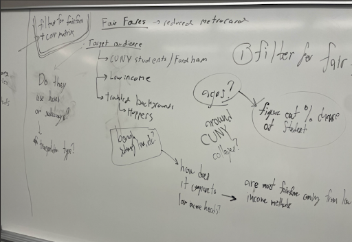
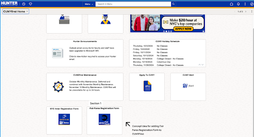
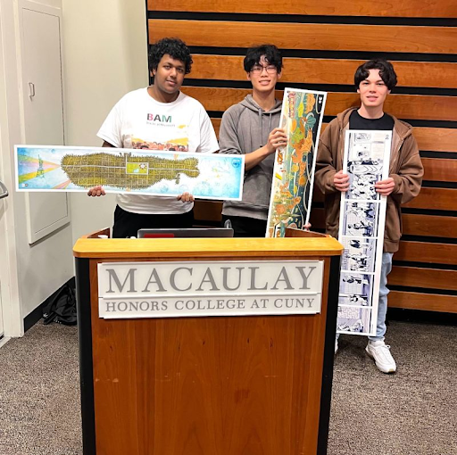

- Python (Jupyter Notebook)
- Pandas
- Excel
- Seaborn
2024 Macaulay X MTA Datathon
An analysis and assesment of FairFares across CUNY
Tools Used
the datathon
This was our first Datathon, and while we were a bit nervous, we had experience from hackathons and robotics competitions. We were eager to take on the challenge and learn something new.
We decided to tackle the Fair Fares category. Initially, we brainstormed ideas for apps and scripts, but quickly realized the event's analytical nature. Our first idea focused on a question: How much could the MTA save if Fair Fares was implemented in CUNY schools? However, after getting feedback from Danna Dennis, one of the mentors, we learned that the HRA runs the Fair Fares program, not the MTA. This insight led us to shift our focus to: Should Fair Fares be promoted at CUNY?
From there, we dove into research. Using Python, Pandas, and Matplotlib, we analyzed data from the 2023 NYPD MTA Summons and Open Data NY MTA Hourly Ridership datasets. We compared fare evasion rates at subway stations near public (CUNY) and private colleges. Our initial findings showed that stations near CUNY colleges had much higher rates of fare evasion, highlighting a resource gap for CUNY students. If they can't afford the $2.90 fare, how can they afford a $100 summons?
Our final solution was to propose a Fair Fares button on CUNYFirst to help promote the program for free. After we had our graphs and ideas ready we started developing the slides. While making our slideshow we received invaluable feedback from another mentor, Prisca Agombe (btw the mentors for the Datathon were so helpful!!), who helped guide us in the process of creating a story. This elevated our presentation from just a simple show of statistics to a meaningful problem with a solution supported by statistics and data, keeping our presentation engaging throughout.
We told the story of CUNY, a resilient group of students who at times find themselves disadvantaged compared to the students at wealthier schools like NYU and Columbia. We showed how a lack of resources, specifically household income, can lead to more students who are more likely to hop the turnstile. These are students who struggle to afford the creeping prices of public transportation and as a result have to resort to fare evasion in order to get their education. And when these people who can’t afford the full $2.90 are ticketed for $100, this can set back those very students who now, more than ever, are the future of the city. In proposing our solution, we’d like to highlight the issue that many CUNY students aren’t even aware of this program! With our 0-cost marketing solution we could better promote this program to 250,000+ CUNY students across the city. This helps the city prevent spending even more than it already has while marketing to a vast audience.
We didn’t think we would get it this far, but we ended up presenting in front of everyone! Sadly, Ayen wasn’t there 🙁. We were nervous but we were confident in our data and we knew our presentation was strong, so we went up and presented! After our presentation, we didn’t think we were going to win, as the other teams had amazing data and analytics. But to our shock we won! We were so excited and surprised, very grateful that the judges loved our idea!
This wasn’t the end for our group, we are now competing in the MTA OpenData challenge and are working on implementing Fair Fares into CUNYFirst to turn our idea into reality!
Overall the hackathon was a great event and we learned so much! As this was some of our first times ever doing data analysis (Eric is used to this type of stuff and enjoys it!), it was definitely challenging in different ways. For example, a lot of times it did become tedious when looking at huge amounts of data. It wasn’t like developing a project and seeing a cool app in real time. You needed a lot more patience in a Datathon! We would definitely do a datathon again, maybe next time around making an app, hopefully we can go to Hacklytics at Georgia Tech!
Make sure to check it out! (Link to project)